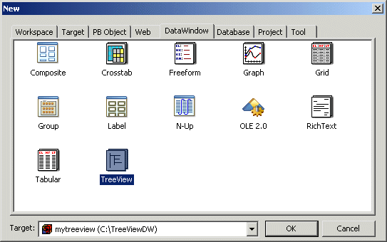
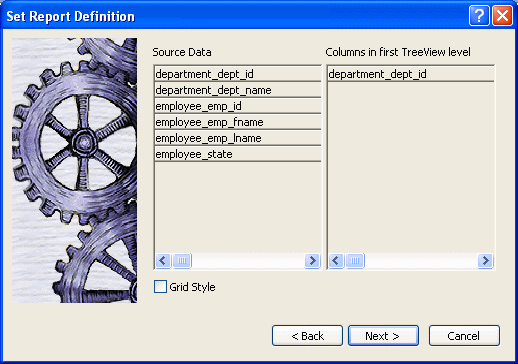
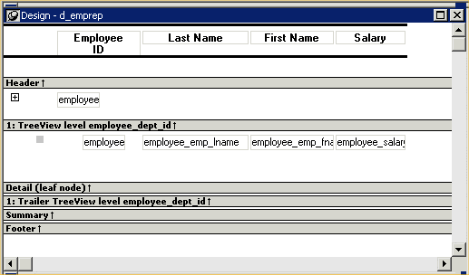
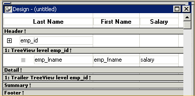
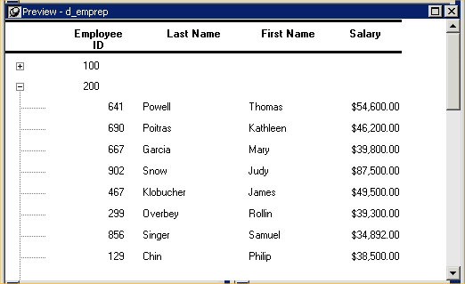

You use the TreeView wizard and the DataWindow painter to create a TreeView DataWindow.
A TreeView DataWindow has multiple levels, each of which is a node in the TreeView. You use the TreeView wizard to create a TreeView DataWindow, but the wizard produces a DataWindow that includes only the top level of the TreeView.
Creating a complete TreeView DataWindow involves three steps:
For information about adding and deleting TreeView levels, see "Adding and deleting TreeView levels". For information about setting properties in the DataWindow painter, see "Setting properties for the TreeView DataWindow".
You can use TreeView DataWindow methods to expand and collapse TreeView nodes, and you can write code for TreeView DataWindow events that are fired when a node is expanded or collapsed. For detailed information about using TreeView DataWindow properties, methods, and events, see the DataWindow Reference or the online Help.
 To create a TreeView DataWindow:
To create a TreeView DataWindow:
Select File>New from the menu bar and select the DataWindow tab.
If there is more than one target in the workspace, select the target where you want to create the DataWindow from the drop-down list at the bottom of the dialog box.
Choose the TreeView presentation style for the DataWindow and click OK.

Select the data source you want to use: Quick Select, SQL Select, Query, External, or Stored Procedure.
You are prompted to specify the data.
Define the tables and columns you want to use.
You are prompted to specify the TreeView grouping columns.
 Multiple columns and multiple TreeView levels You can specify more than one column, but all columns apply
to TreeView level one. At this point, you can define only one TreeView
level. You define additional levels later.
Multiple columns and multiple TreeView levels You can specify more than one column, but all columns apply
to TreeView level one. At this point, you can define only one TreeView
level. You define additional levels later.
In the following example, TreeView grouping will be by department, as specified by the dept_id column:

If you want to use an expression, you can define it when you have completed the wizard. See "Using an expression for a column name".
The sample DataWindow shown in "Example" uses the department and employee tables in the EAS Demo DB database.
Specify the column or columns that will be at the top level (level 1) of the TreeView DataWindow.
The sample DataWindow uses the department name as the top level. If you want to display both the department ID and department name, you specify that both columns are at the top level.
If you want the TreeView DataWindow to display grid lines, select the Grid Style check box.
When you select the Grid Style check box, the TreeView DataWindow displays grid lines for rows and columns. You can drag the grid lines to resize rows and columns.
Click Next.
Modify the default color and border settings if needed, and then click Next.
Review the TreeView DataWindow characteristics.
Click Finish.
The DataWindow painter Design view displays. For information about the Design view, see "TreeView DataWindow Design view". For information about adding additional levels, see "Adding and deleting TreeView levels".
As a result of your specifications, PowerBuilder generates a TreeView DataWindow object and creates:
Here is the sample TreeView DataWindow object in the Design view:

If you selected the Grid Style check box, vertical and horizontal grid lines display:

Here is the sample TreeView DataWindow object in the Preview view:

If you want to use an expression for one or more column names in a TreeView, you can enter it as the TreeView definition on the General page in the Properties view after you finish using the TreeView wizard.
 To use an expression for a TreeView column name:
To use an expression for a TreeView column name:
Open the Properties view and click the TreeView level band in the Design view.
Click the ellipsis button next to the TreeView Level Definition box on the General page in the Properties view to open the Specify Group Columns dialog box.
In the Columns box, double-click the column you want to use in an expression.
The Modify Expression dialog box opens. You can specify more than one grouping item expression for a group. A break occurs whenever the value concatenated from each column/expression changes.
All of the techniques available in a tabular DataWindow object , such as moving controls and specifying display formats, are available for modifying and enhancing TreeView DataWindow objects. See "Adding and deleting TreeView levels" to read more about the bands in a TreeView DataWindow object and see how to add features especially suited for TreeView DataWindow objects, such as additional TreeView levels or summary statistics.
 DataWindow object is not updatable by default When you generate a DataWindow object using the TreeView presentation style, PowerBuilder makes
it not updatable by default. If you want to be able to update the
database through the TreeView DataWindow object, you must modify its update
characteristics. For more information, see Chapter 21, "Controlling Updates in DataWindow Objects."
DataWindow object is not updatable by default When you generate a DataWindow object using the TreeView presentation style, PowerBuilder makes
it not updatable by default. If you want to be able to update the
database through the TreeView DataWindow object, you must modify its update
characteristics. For more information, see Chapter 21, "Controlling Updates in DataWindow Objects."